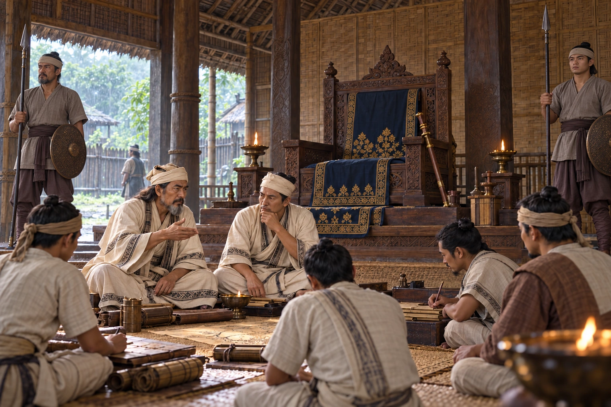

Interregnum After the Death of Sukhrangphaa
1364–1369 · The coming of Sukaphaa

With no acceptable heir after Sukhrangphaa's death, the throne stays empty for five years and the Burhagohain and Borgohain rule. It is the first of three interregnums before 1397.
Empty royal seat and unnamed ministers; the deceased Sukhrangphaa is not depicted alive.
People: Sukhrangphaa
Open this scene in the interactive archive · Follow this event on MAP